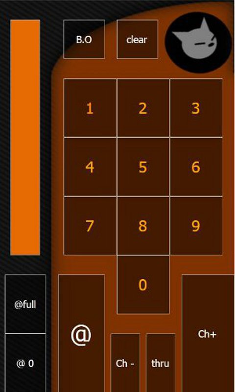
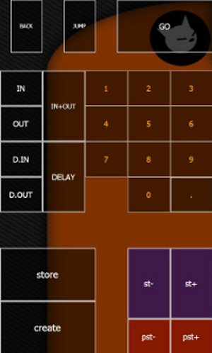
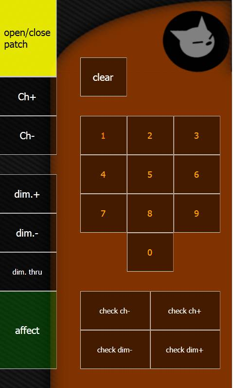

par rwannoux
Win-remote est un ensemble de télécommande pour contrôler divers logiciels de votre ordinateur, il existe une télécommande dédiée à whitecat appelée white-mote. Vous pouvez télécharger win-remote depuis le play-store depuis votre appareil android. Une fois win-remote installé et lancé, vous pouvez installer white-mote depuis le remote market. Vous devez aussi installer sur l'ordinateur le logiciel win-remote service. Vous le trouverez ici
Pour le fonctionnement de win-remote : le wiki de win-remote
white-mote dispose de 3 pages :
La première permet de contrôler les circuits et intensités.

La seconde offre quelques fonctions sur la manipulation des mémoires et du séquentiel.

La troisième permet l'ouverture de la fenêtre patch, la sélection et l'assignation des circuits et gradateurs.

correspondance des touches et des frappes clavier
| page 1 circuits et intensités | ||
|---|---|---|
| touche | frappe clavier | |
| chiffres 0 à 9 | chiffres 0 à 9 | |
| slider à gauche | flèche haut ou flèche bas (slide haut ou bas) | |
| B.O.(black out) | F12 | |
| clear | escape | |
| @ full | i | |
| @ 0 | o | |
| @ | return | |
| Ch+ | + | |
| Ch- | - | |
| thru | tab | |
| page 2 mémoires et séquentiel | ||
| touche | frappe clavier | |
| chiffres 0 à 9 | chiffres 0 à 9 | |
| back | [CTRL][SPACE] | |
| . | . | |
| GO | [SPACE] | |
| jump | [SHIFT][SPACE] | |
| in | K | |
| out | J | |
| in+out | L | |
| D.in | [SHIFT][K] | |
| D.out | [SHIFT][J] | |
| Delay | [SHIFT][L] | |
| store | [CTRL][F1] puis [RETURN] | |
| create | [SHIFT][F1] puis [RETURN] | |
| st- | [CTRL][W] | |
| st+ | [CTRL][X] | |
| pst- | [SHIFT][W] | |
| pst+ | [SHIFT][X] | |
| page 3 patch et check | ||
| touche | frappe clavier | |
| chiffres 0 à 9 | chiffres 0 à 9 | |
| open/close patch | [SHIFT][P] | |
| ch+ | + | |
| ch- | - | |
| dim+ | [SHIFT][+] | |
| dim- | [SHIFT][-] | |
| dim. thru | [SHIFT][TAB] | |
| affect | [SHIFT][ENTER] | |
| clear | escape puis [SHIFT][escape] | |
| check ch- | [CTRL][←] | |
| check ch+ | [CTRL][→] | |
| check dim- | [SHIFT][←] | |
| check dim+ | [SHIFT][→] | |
il est important de noter deux trois choses :
Dans la seconde page, le “store” et le “create” envoie la commande de création/modification de mémoire PUIS la validation par RETURN.
Dans la 3e page le “clear” vide la selection des circuits ET des gradateurs.
le bouton “open/close patch” ouvre parfois le numpad plutôt que le patch (l'appui sur [SHIFT] peut parfois se perdre).
Quelque soit l'application qui vous servira de télécommande il vous faut maintenant faire communiquer votre téléphone android et votre ordinateur. La plupart de ce genre d'application utilisent la wi-fi
pour cela. Si vous vous trouvez dans un lieu disposant d'un routeur et que votre ordi et votre androphone sont connectés sur ce même réseau, pas de problème.
Si par contre vous vous trouvez quelque part sans réseau, et même sans 3G ; ça devient problématique. Android ne pouvant pas gérer les réseau ad hoc.
Il existe un logiciel qui permet de créer un nouveau réseau sans fil auquel pourra se connecter votre androphone : c'est connectify .
vous pouvez le télécharger ici
le support de connectify c'est ici
Une fois le logiciel installé et lancé vous pouvez configurer votre nouveau réseau, lui donner un nom et un code d'accès. Veuillez faire attention à ne PAS générer de réseau ad-hoc. Une fois cela fait, activez la wi-fi de votre android et connectez le à ce nouveau réseau.
attention : connectify génère une adresse IP spécifique à votre ordinateur, vous pouvez la trouver en ouvrant le centre réseau et partage puis cliquez sur la connexion de connectify (qui devrait s’appeler “connexion réseau sans fil 2”) puis “détail”.
Gpad est aussi un ensemble de télécommandes. Lakhtdcd (un utilisateur de whitecat) a créé un pad appelé “whitecat channel” et j'y avais aussi fait un pad appelé “whitepad”.
Gpad ne fonctionne plus sur mon HTC wildfire depuis leur dernière mise à jour. (mars 2012).
page wiki par Rwanoux